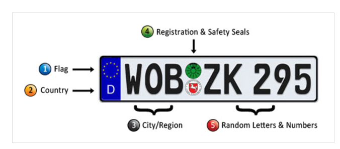
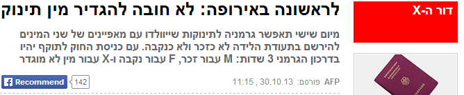
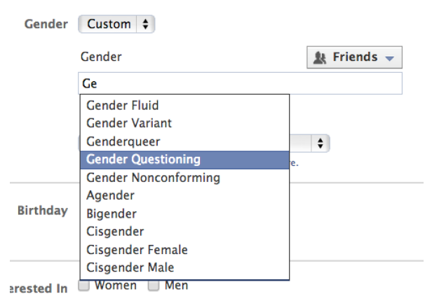

כל הכיסאות עובדים על אותה חבילת דרישות — היום אנחנו יושבים באחד מהם: מודל הנתונים.
הגדרה כללית של קבוצת אובייקטים בעלי אותן תכונות ופעולות. Class — כמו טופס ריק, נכתב פעם אחת.
Object קונקרטי בודד של המחלקה, עם ערכים ממשיים — הזמנה מסוימת של סטודנט מסוים.
התרשים ממדל מחלקות (תבניות) — לא אובייקטים בודדים.
המבנה הסטטי של המערכת: המחלקות שהמערכת מנהלת והקשרים ביניהן. תרשים תרחישי שימוש מתאר התנהגות (מה) — תרשים המחלקות מתאר מבנה ונתונים (איך בנוי).
תוצר מרכזי של שלב העיצוב: מ״מה המערכת עושה״ אל ״איך בנוי המידע שלה״.
מדביקים ל-AI את תרחישי השימוש והדרישות (הרצאה 4-5) — ומקבלים טיוטת מודל מחלקות עם קשרים ראשוניים, מיד.
המודל הוא משטח האימות שלך. על כל טיוטה שאל: מה הומצא? מה חסר? מה הונח?
מחלקה = תיאור של קבוצת אובייקטים בעלי תכונות, פעולות וקשרים דומים.
התרשים ממדל מחלקות (תבניות) — לא אובייקטים בודדים.
שם מחלקה הוא מזהה — הוא יהפוך לשם טבלה ולשם מחלקה בקוד. לכן יש לו כללי כתיבה, והוא לא טקסט חופשי.
| ✗ שגוי | ✓ תקין | למה |
|---|---|---|
| orders | Order | ביחיד — המחלקה היא התבנית לאובייקט אחד |
| menu item | MenuItem | בלי רווח; כל מילה נפתחת באות גדולה |
| order_line | OrderLine | בלי קו תחתון או מקף |
| PlaceOrder | Order | שם עצם — פעולה היא operation בתוך המחלקה |
| הזמנה | Order | מזהים נכתבים באנגלית — אין שמות טבלאות ומחלקות בעברית |
מדברים על ההזמנה בעברית — וכותבים Order בתרשים. זו העבודה בשטח.
UML נוצר כדי שמהנדס יוכל לתאר מערכת בלי להתחייב ל-Java, ל-Python או ל-SQL. לכן שם הטיפוס בתרשים הוא שם שאנחנו בוחרים, לא מילה שמורה בשפה.
| בתרשים (UML) | C#הפרויקט שלכם | Java | Python | SQL |
|---|---|---|---|---|
| String | string | String | str | VARCHAR(n) |
| DateTime | DateTime | LocalDateTime | datetime | TIMESTAMP |
| Money | decimal | BigDecimal | Decimal | NUMERIC(10,2) |
| - private | private | private | מוסכמה בלבד — אין אכיפה | הרשאות / View |
| Phone [0..*] | List<Phone> | List<Phone> | list[Phone] | טבלה עם מפתח זר |
השורה האחרונה היא קשר ולא תכונה — ולכן הריבוי בה חוקי. בקוד הוא הופך לאוסף של אובייקטים, ובמסד הנתונים לטבלה עם מפתח זר — אין שם רשימה בכלל.
המודל לא נכתב עבור שפה מסוימת — אל תצמצמו אותו למגבלות של שפה בשלב הניתוח.
רק השם חובה — כל שאר המרכיבים לפי הצורך
המבחן: האם מישהו מחוץ למערכת מפנה לדבר הזה בעצמו? אם אומרים בקול ״הזמנה 1042״ — יש מזהה. אם אומרים ״השניצל שבהזמנה 1042״ — אין.
בזיכרון לאובייקט יש זהות בחינם; לשורה במסד צריך כתובת — ומשם נולד המזהה.
מה שהעסק מכיר — נכנס לתרשים. מה שרק המסד צריך — נשאר במסד.
אילוץ נכתב תמיד בסוגריים מסולסלים ומגדיר חוק על הערך:
quantity {> 0} · price {≥ 0}
יש גם מילות מפתח תקניות: {readOnly} · {unique} — לצד אילוץ חופשי משלכם.
אילוץ מורכב אפשר לתלות ב-Note (פתק):
אילוץ נכתב תמיד בסוגריים מסולסלים — הוא חלק מהמודל, לא הערה בצד.

כל אילוץ שאתם כותבים — שאלו קודם: מה יקרה כשהמציאות תפר אותו?
if (day == 1)
if (day == "Sunday")
if (day == DayOfWeek.Sunday)
שם קריא — בלי לוותר על בדיקה. זה כל הרווח.
אם משתמש צריך להוסיף ערך ביום שלישי בצהריים — זה כבר לא enum.


Boolean נשבר תמיד. בין enum למחלקה — כמה עולה ערך חדש? אם התשובה ״גרסה״, זו מחלקה.
בכל כרטיס — רשימת ערכים. שלוש השאלות: האם הקוד מתפצל? מי בעל הרשימה? והאם לערכים יש נתונים משלהם?
אף פעם לא סופרים ערכים — שואלים מי הבעלים, האם הקוד מתפצל, והאם לערכים יש נתונים משלהם.
חלק שלישי בתיבה — נכתב בכתב נטוי
הפעולות נכתבות בכתב נטוי — כך מבחינים אותן מהתכונות בתיבה.
בתרשים מראים מה שרלוונטי לדיון. המפרט המלא — טיפוסים, ברירות מחדל, אילוצים, פרמטרים וערכי החזרה — קיים במודל, גם כשהתיבה לא מציגה אותו. לחצו על מחלקה כדי לראות את המפרט המלא שלה.
אותה מחלקה, שלוש רמות פירוט — מודל אחד מאחורי כולן.
- unitPrice : Money
+ total() : Money
מה שאפשר לחשב — לא מאחסנים. מה שלא — זו עובדה, ומאחסנים אותה.
הסימון בתחילת כל חבר (תכונה או פעולה) קובע מי רשאי לגשת אליו — מבפנים, מהיורשים, או מכל מקום.
| סימון | נראות | משמעות | דוגמה מהקמפוס |
|---|---|---|---|
| + | Public — ציבורי | כל מחלקה אחרת יכולה לגשת | + total() : Money על הזמנה — כל מי שמשתמש בהזמנה יכול לחשב את הסכום |
| # | Protected — מוגן | רק המחלקה ותתי-המחלקות (היורשים) | # validate() על תשלום — זמין לתשלום בכרטיס ולתשלום באשראי, לא מבחוץ |
| - | Private — פרטי | רק המחלקה עצמה | - pickupCode : String על הזמנה — מוסתר מכל מחלקה אחרת |
בניתוח נסמן נראות בסיסית; העיצוב המלא מתחדד בקוד.
האם המערכת שומרת ומנהלת מידע על זה לאורך זמן?
המערכת מנהלת עליהן CRUD — לכן הן מחלקות.
פלט מחושב (נגזר בזמן אמת)
מחושבים מנתונים קיימים בכל פעם מחדש — אין רשומה עצמאית לנהל.
משתתף שאיננו נשמר
המבחן בכל אחד מהם: האם המערכת שומרת ומנהלת מידע על זה לאורך זמן?
השם לא מכריע — ההתנהגות של המערכת מכריעה.
כשהדיון הוא על הקשרים בין המחלקות, אין צורך בכל הפרטים. מצמצמים את התיבה ומשאירים רק את מה שחשוב.
מלא — שם, תכונות ופעולות
שם + תכונות
שם בלבד
הַראו את מה שחשוב לדיון — והשמיטו את השאר כדי למקד בקשרים. המחלקה עדיין מכילה את כל חבריה.
שיוך במרחב שם: Ordering::Order · Billing::Payment
בקורס הזה לא נשתמש בחבילות — מכירים את המונח, ולא נדרשים אליו בתרגילים.
לאוניברסיטה כמה מקבצי מעונות (מעונות ג׳, מעונות ד׳…), כל מקבץ במיקום אחר בעיר. לכל המקבצים יש אב בית אחד שמטפל בתקלות.
בכל מקבץ יש בניינים, ובכל בניין דירות — מספר שונה בכל בניין. בחלק מהבניינים יש גם חדרים שאינם למגורים (מועדון סטודנטים, חדר מחשבים).
לדירה יש סוג (רווקים · נשואים), כמות דיירים, ורשימת תנאים — דוד חשמל, דוד שמש, כיריים גז, כיריים חשמל… כל דירה מיועדת לשנות לימוד מסוימות.
בכל דירה כמה חדרי מגורים, ולכל חדר כמות סטודנטים משלו — יש חדרים ליחיד, לשניים וכו׳. סטודנטים משובצים לחדרים על ידי משרד המעונות.
הערה: כמות הסטודנטים בחדר נקבעת על ידי דיקאנט הסטודנטים. היא קבועה בדרך כלל — אבל הדיקאנט יכול לשנות אותה (כך הפכו חדרי זוגות לחדרי יחיד).
שתי המלכודות: ״תנאים״ ו״כמות הסטודנטים בחדר״ — והשוו: האוניברסיטה נכנסת לתרשים, הדיקאנט לא.
בשקפים הבאים נצלול לכל קשר בנפרד — על מודל הזמנת האוכל בקמפוס.
סטודנט אחד מבצע אפס או יותר הזמנות; כל הזמנה שייכת לסטודנט אחד בדיוק. קו מלא, בלי חץ.
לקטגוריה יש הורה אחד ותת-קטגוריות משלה — אותה מחלקה בשני הקצוות.
שמות תפקיד על הקצוות הם אופציונליים — כאן בלי הם לא היינו יודעים מי ההורה.
הזמנה משויכת לתשלום בכרטיס אוניברסיטה {or} תשלום באשראי — אחד מהם, לא שניהם. מסמנים {or} על שני הקווים היוצאים.
קרדינליות היא החלטה עסקית — ולפעמים המספר שגוי כי המחלקה שגויה.
| בעיצוב | במימוש |
|---|---|
| 0..* | List<OrderLine> |
| 1 | שדה חובה, לא ניתן ליצור בלעדיו |
| { } | canAddLine() |
אתם מייצרים את תרשים העיצוב; ה-AI גוזר ממנו את המימוש — מה שלא אמרתם, הוא ימציא.
ובעיקר מבחן ②: צמד שיכול להופיע פעמיים — כבר אינו מחלקת קשר.
מחלקת קשר אינה ״חצי מחלקה״ — מה שאין לה זה זהות ומחזור חיים משלה, וזה הכול.
שאלה אחת מכריעה: האם הצמד מזהה את המופע? כן ⇐ מחלקת קשר · לא ⇐ מחלקה מתווכת.
| היבט | מחלקת קשר (Association Class) | מחלקה מתווכת (Mediating Class) |
|---|---|---|
| מבחן ההכרעה | הצמד מזהה מופע אחד לכל היותר | הצמד יכול לחזור, או שלמופע יש חיים משלו |
| סימון | הקשר נשאר; קו מקווקו אל אמצע הקו | מחליפה את הקשר בשתי אסוציאציות |
| במסד הנתונים | טבלה שמפתחה הוא הצמד (מפתח מורכב) | טבלה עם מפתח משלה, כמו כל מחלקה |
אותה שאלה בשתי הדוגמאות: האם הצמד מזהה את המופע? — והתשובה מגיעה מהעסק, לא מהתרשים.
0..* בקצה של
מוצר נספר לכל צירוף של ספק ומחסן. בפירוק, 1 אומר פשוט: כל אספקה היא של מוצר אחד.
שתי שאלות שונות — ורק השנייה נקראת.שלושה צדדים ומעלה ⇐ תמיד מחלקה מתווכת, ומכל צד קשר רגיל. את המעוין משאירים בתקן.
NOT NULL + מחיקה מדורגת (ON DELETE CASCADE) ·
החלק נוצר דרך השלם ואין לו מסך או CRUD משלו · ואין אליו הפניה שנייה.◆ הוא הוראה למי שמממש — ולכן מה שסומן בו בטעות עלול להימחק בטעות.
List<Station> בדיוק כמו באסוציאציה רגילה.◆ משנה את המימוש · ◇ לא משנה כלום. לכן על ההרכבה חושבים, ועל הצבירה לא מתעכבים.
שתי שאלות בלבד: מה קורה לחלק כשמוחקים את השלם? והאם מישהו נוסף מחזיק בו? ⇐ שתי תשובות שורדות לתרשים: ◆ הרכבה או קו רגיל.
מתוך שלוש האפשרויות — רק שתיים מגיעות לתרשים: ◆ כששני המבחנים עוברים, ואחרת קו רגיל.
תכונה ריקה ופעולה שונה — לא מספיקות. קשרים שונים, או תכונות שסותרות זו את זו — זו הורשה.
לפני שמכריזים ״הורשה״: האם הקשרים שונים? האם התכונות סותרות? והאם המופע יכול לעבור סוג — כי אז זו בטוח לא הורשה.
ארבעה מהשמונה הם הורשה — וכולם מאותה סיבה: הקשרים שונים. אף אחד לא בגלל ״שדה נוסף״.
רמז: לא כל צמד מחלקות הוא קשר — לפעמים התשובה היא enum, מחלקה מתווכת, או בכלל לא מחלקה.
החלק לא קיים בלי השלם — מוחקים הזמנה, נמחקות השורות.
החלק מתקיים בעצמו — אפשר להעביר אותו לשלם אחר.
איזה יהלום — מלא או חלול? כלומר: קיום החלק תלוי בשלם, או לא?
👆 לחצו שוב על הכרטיס — תשובה ושיקולים
העמדה לא קיימת בלי הקפיטריה — נמחקת יחד איתה.
העמדה עצמאית — אפשר לשייך אותה מחדש לקפיטריה אחרת.
נראה בדיוק כמו מקרה 1 — אז למה התשובה אחרת? מה קורה לעמדה כשהשלם נמחק?
ובקורס: כיוון שזו אינה הרכבה — מציירים קו רגיל. ◇ חוקי ב-UML, ואנחנו לא מייצרים אותו.
👆 לחצו שוב על הכרטיס — תשובה ושיקולים
משולש חלול בצד ההורה — כל תת-סוג מוסיף את התכונות שלו.
רשימת ערכים סגורה — בלי תכונות משלה לכל ערך.
מה מכריע בין הורשה ל-enum? לא ״יש לו עוד שדה״ — אלא האם התכונות סותרות, והאם הקשרים שונים.
👆 לחצו שוב על הכרטיס — תשובה ושיקולים
קו ישיר בין הזמנה לפריט תפריט, בלי מחלקה באמצע.
מחלקה נוספת באמצע, ועליה quantity ו-notes.
איפה יכולה לגור כמות — על קו, או על מחלקה?
👆 לחצו שוב על הכרטיס — תשובה ושיקולים
מחלקה לכל מצב, וכולן יורשות מהזמנה.
קופסה לא מחוברת — סוג התכונה status הוא הקישור היחיד.
האם ל״הזמנה ממתינה״ יש תכונות שאין ל״הזמנה מוכנה״? אם לא — מה זה אומר?
👆 לחצו שוב על הכרטיס — תשובה ושיקולים
נשמרת ומנוהלת — עם תכונות ופעולות משלה.
מחושב מנתונים שכבר קיימים (הזמנות) ומוצג למשתמש.
מבחן ההימצאוּת: המערכת שומרת את המידע הזה, או מחשבת אותו?
👆 לחצו שוב על הכרטיס — תשובה ושיקולים
המטרה בקורס אחת: לסמן מערכת חיצונית שאנחנו קוראים לה. אין קרדינליות על הקו, ולעולם לא בין שתי מחלקות תחום.
תלות עונה על שאלה אחת: למי אנחנו קוראים ולא שומרים? כל השאר — קו רגיל, או בכלל לא בתרשים.
שתי שאלות מכריעות: האם אנחנו שומרים על זה רשומות? והאם זה בכלל משהו שהעסק יודע עליו? לחיצה שנייה על כרטיס — התרשים עצמו.
שומרים ⇐ מחלקה · קוראים ולא שומרים ⇐ ⇢ חיצונית · העסק לא יודע ⇐ לא בתרשים.
רשימה בתוך תכונה היא מחלקה שלא נולדה. תנו לה שם, והכול נפתר מעצמו.
אם על התכונה יש לכם עוד מה לספר — היא לא תכונה, היא מחלקה שלא נוצרה.
אם צריך לפצל מחרוזת כדי לענות על שאלה עסקית — המודל לא סיים את העבודה.
| בתרשים המחלקות | במסד הנתונים |
|---|---|
| מחלקה | טבלה |
| אובייקט | שורה |
| תכונה | עמודה |
| מזהה עסקי (orderId) | מפתח ראשי |
| אין מזהה (OrderLine) | מפתח שהמסד ממציא |
| קשר 1 — 1..* | מפתח זר בצד ה״רבים״ |
| הרכבה ◆ | מחיקה מדורגת · NOT NULL |
| צבירה ◇ | מפתח זר שמותר שיהיה ריק |
| הורשה | החלטת עיצוב: טבלה אחת · או טבלה לכל בן |
| enum | אילוץ CHECK · או טבלת ערכים |
| פעולה total() | כלום — היא חיה בקוד |
תרשים המחלקות מגדיר את מבנה הנתונים. זו התחלה של העיצוב, לא כולו.
תרשים המחלקות אומר מה המערכת מחזיקה; שאר העיצוב קובע איך היא בנויה ומתנהגת.
סכימת בסיס נתונים ופעולות CRUD לכל מחלקה (הזמנה, פריט תפריט, תשלום), וולידציות ישירות מהאילוצים — quantity {> 0}, price {≥ 0}.
מה שאין במודל: הדרישות הלא-פונקציונליות (עומס שיא, אבטחה) והאינטגרציה למערכות החיצוניות — זיהוי האוניברסיטה ושער התשלום. ה-AI אינו מחליט אותן במקומכם.
לכל בניין יש חדרים (יחיד / זוגי). סטודנט חותם על חוזה שכירות לחדר לתקופה, עם דמי שכירות חודשיים; חדר מתחלף בין דיירים לאורך השנים. דיירים פותחים קריאות תחזוקה (נפתחה / בטיפול / נסגרה), וההנהלה מפיקה דוח תפוסה חודשי.
לא מדרגים כמה מהר ה-AI צייר — מדרגים כמה חדה הביקורת שלכם.

הכלי הנכון חוסך את רוב הטעויות — ואת מה שנשאר, רק אתם תתפסו.
מחזור החיים של הזמנה בקמפוס: ערכי ה-enum OrderStatus — ממתין ← בהכנה ← מוכן ← נאסף — קמים לחיים כמצבים וכמעברים ביניהם.
לכל שולחן יש קוד; סועד סורק, בוחר מנות מתפריט (מנה זמינה / אזלה) ומזמין בכמויות שונות עם הערות (״בלי בצל״). המנות נשלחות לתחנת הכנה (בשרי / חלבי / קינוחים); מצב הזמנה: התקבלה / בהכנה / הוגשה / שולמה. ההנהלה מפיקה דוח מכירות יומי.
לא מדרגים כמה יפה ה-AI צייר — מדרגים כמה חדה הייתה הביקורת שלכם.